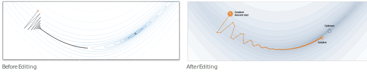

Publishing in the Distill Research Journal
Why Publish in Distill?
| Flexibility |
Distill encourages you to go beyond traditional academic forms. The goal is to best communicate science and serve the reader. |
Scholarly
Recognition |
Distill articles are peer reviewed and appear in Google Scholar. Distill is also registered with the Library of Congress and CrossRef. ISSN: 2476-0757 DOI: http://doi.org/10.23915/distill |
| Neutrality |
Distill provides a neutral platform for multiple authors to jointly publish. This is in contrast to a personal website, where outside contributors may get less credit. |
| Impact |
Distill articles are read by tens of thousands of people. |
Writing a Distill Article
Distill articles are prepared in HTML using the Distill infrastructure -- see the getting started guide for details. The infrastructure provides nice default styling and standard academic features while preserving the flexibility of the web.
Distill articles must be released under the Creative Commons Attribution license. Distill is a primary publication and will not publish content which is identical or substantially similar to content published elsewhere.
To submit an article, first create a GitHub repository for your article. You can keep it private during the review process if you would like -- just share it with @colah and @shancarter. Then email review@distill.pub to begin the process.
Distill handles all reviews and editing through GitHub issues. Upon publication, the repository is made public and transferred to the @distillpub organization for preservation. This means that reviews of published work are always public. It is at the author's discretion whether they share reviews of unpublished work.
The Distill Review Process
The first two stages of review are led by an editor. The editor will bring in external peer reviewers based on their discretion as to what perspectives are needed, optimizing for high-quality review and an excellent review experience for all parties. The amount of time these stages take is highly variable depending on how responsive the authors are.
For all publications, Distill will review for outstanding communication and design, in addition scientific quality and integrity. Distill provides expert editing to help authors improve their writing and diagrams. While our review process does take time and energy, we strive to ensure it is well worth your effort.

In the third stage of review, readers can raise new concerns through github issues. The issues will be moderated by Distill's moderators. Significant issues may be displayed in the article margin if the author does not address them.
Distill may occasionally publish editorials, commentary, and invited content without peer review. This content will be clearly marked. Articles published prior to March 20, 2017 were informally reviewed without an official policy on how to do so.
Distill's review policy is still developing and we expect to learn a great deal as we review papers. We will publish a more detailed, revised version of this policy by March 2018.
Conflicts of Interest
Distill editors can not be involved in the review process for a paper on which they are an author or where they are unable to be objective. If no editors are available to review an article, a member of the steering committee may lead the review process or have someone independent do so.
Machine learning is a small field and Distill's editors will inevitably have prior relationships with some authors. Such relationships must be disclosed in the review process.
Ethics Concerns (eg. Plagiarism, Misconduct, etc.)
If you have any concern, please email ethics@distill.pub. You can also reach out to Distill's editors or steering committee members individually if that feels more comfortable.
Distill is still establishing policies and procedures. As issues arise we’ll consult with the community and give consideration to the policies of journals we respect (eg. PLOS), the recommendations of the Committee on Publication Ethics, community norms, and the philosophy of the Open Science movement.